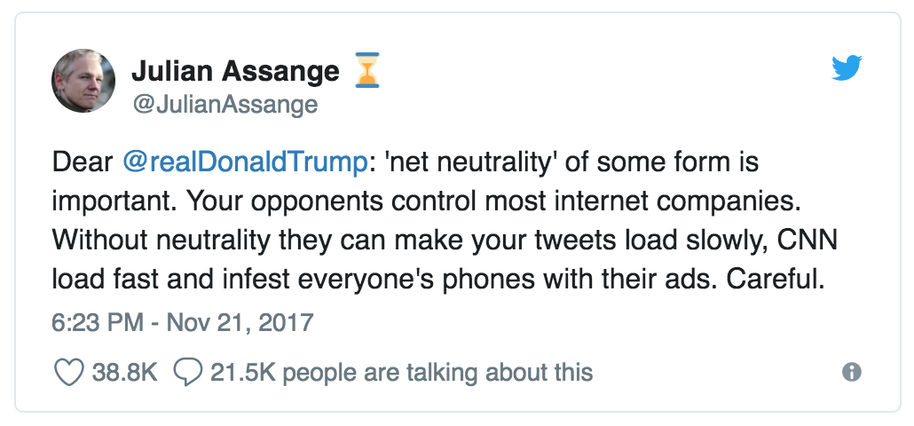
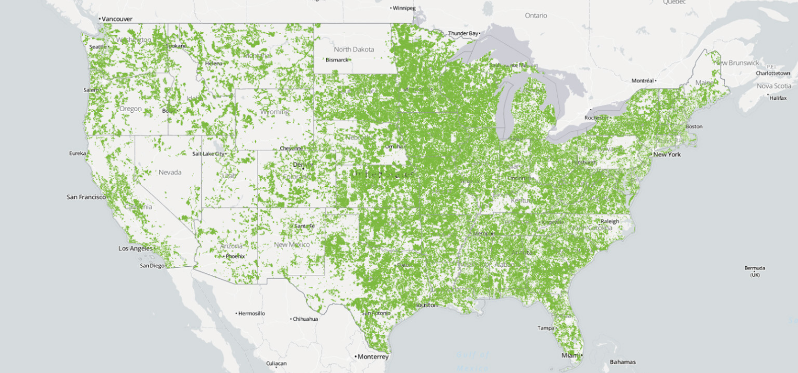
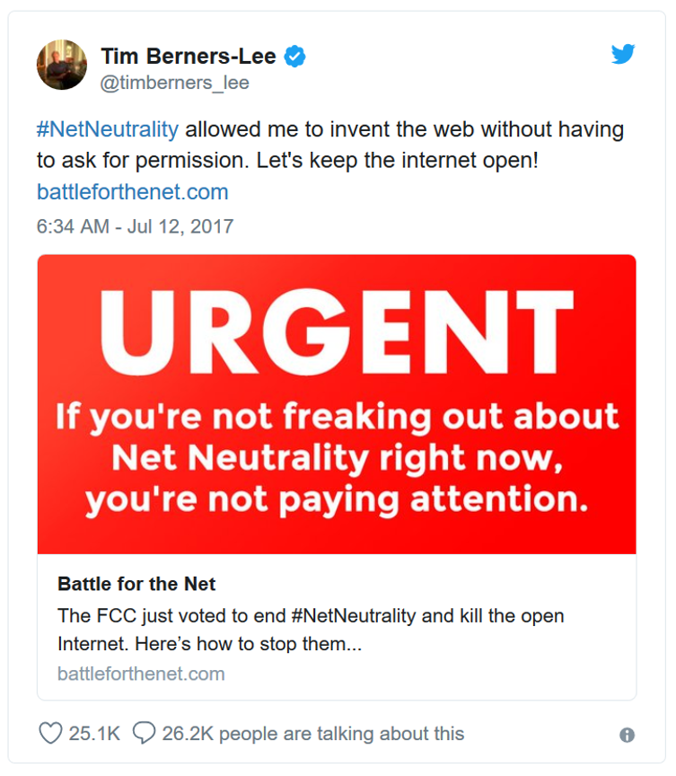
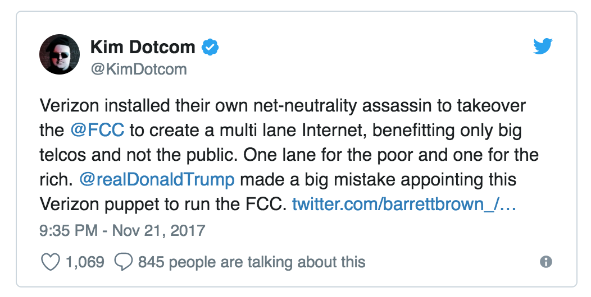

Don't Tread on the Net
Sign the petition to Republican lawmakers:
"Killing net neutrality will silence conservative voices online. Protect freedom on the internet. Protect net neutrality."
Net neutrality is the basic technological principle that has guided the Internet since the beginning. It prevents government-friendly monopolies from abusing their gatekeeper power, and makes the Internet a powerful platform for economic innovation, free speech, and the free exchange of ideas. It has helped conservative websites find an audience, and it has protected them from politically-motivated censorship.
How will repealing net neutrality hurt conservatives?
Net neutrality ensures that Internet Service Providers (ISPs) can't block, censor or throttle traffic to websites. Without net neutrality, Comcast could legally slow down traffic to conservative sites and speed up traffic to its own news websites, like MSNBC. Verizon could legally restrict people from websites that promote guns or sell guns online to be politically correct.
It's not just the ISPs, either. Killing net neutrality will give big Silicon Valley companies even MORE POWER to silence conservative voices. Do you think big Silicon Valley companies have a political agenda?

But what makes you think they will?
Because they've done it over and over and over again. The term "net neutrality" was actually first used to discuss protecting Americans after Comcast banned users from protecting their own online privacy and AT&T prevented customers from using their own wi-fi routers. And that was just the beginning. Since then, Verizon, AT&T and T-Mobile colluded with Google to block innovative apps from entering the marketplace. And what about the time AT&T schemed with Apple to restrict access to Skype? Or when all five major ISPs actually slowed down 75% of all internet traffic? The FCC’s repeal of net neutrality hasn’t even officially gone into effect yet and — surprise, surprise! — AT&T has already rolled out "sponsored data plan".
And what about those big Silicon Valley companies? Facebook doesn't want private individuals to buy and sell guns. Twitter shadow-bans users for supporting Donald Trump. YouTube has purged conservative videos. Medium deleted conservative accounts based on an article so fake that Newsweek had to retract it. This censorship is being perpetrated by the biggest players in social media.
Is it any surprise that they've all quietly supported the repeal of net neutrality? What do you think they'll do with even MORE control over the internet?
So what? The free market will sort things out.
That would be the case… if ISPs operated in a free market. Unfortunately, for years ISPs have operated in local and regional monopolies and duopolies, driving up prices for everyday Americans while providing us with slow internet speeds and terrible customer service. Did you know that over 50 million American households have no choice for their ISP? I'm in one of them… are you?
The green areas of this map show where customers have only one option:

Does that look like freedom of choice? Because to me, it looks like the result of ISPs spending $101,000,000 "lobbying" politicians to protect their companies from competition.
But net neutrality is heavy-handed Obama-era regulations!
WRONG. Mainstream media outlets constantly give Obama credit for net neutrality protections. But the Republican-led FCC actually adopted net neutrality as a policy under George W. Bush in 2005, and millions of people across the political spectrum have been fighting for it ever since. The idea of net neutrality has literally been around since the internet was invented.

It's true that net neutrality is a regulation. But the ISPs' studies claiming that it hurts investment and innovation have been debunked. Net neutrality protects the free market by preventing ISPs from picking winners and losers. And it ensures that NOBODY can restrict your freedom of speech on the internet. Because without net neutrality, the government WILL tell you what you can and can't do online.
Bottom line: Don't let government bureaucrats steal your internet freedom
The fact of the matter is that 77% of all Americans support keeping net neutrality, including 73% of Republicans and 76% of Independents. We know what's best for us, so why is the FCC trying to shove these changes down our throats?
Ajit Pai, the Chairman of the FCC, lied about his reasons for killing net neutrality and ignored comments from millions of Americans. He even undermined States' rights by forbidding us from enacting our own laws. Why would he do that? Hm...

Congress works for you! So make them actually do their job for once. Tell them that you support net neutrality, and they damn well better support net neutrality, too.
Built by: